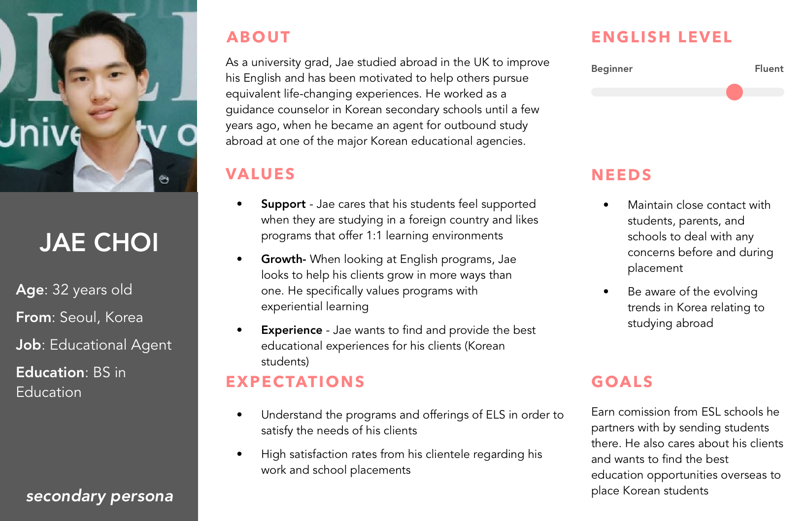

Michigan Language Center: Web Experience Improvement
UX Research + Web Design + Cultural Usability
Overview
Brief
The Michigan Language Center (MLC) project aims to enhance the user experience of non-native English speakers navigating their website. By focusing on cultural nuances and effective communication, the project seeks to improve the transition from specialized landing pages to the main site. This effort includes designing a new Korean landing page to increase applications from Korean-speaking students and ensure a seamless, intuitive user experience.
Duration
Sept 2018 - May 2019
Role
UX Researcher, UI/UX Designer
Skills
- Background Research
- Heuristics Evaluations
- Competitive Analysis
- User Interviews
- Usability Testing
- Empathy Mapping
- Affinity Diagramming
- Personas & Scenarios
- Digital Prototyping
Tools
- Sketch
- InVision
- Figma
- Adobe Illustrator
- Adobe Photoshop
Executive Summary
Creating a community of support through better communication
Michigan Language Center (MLC)’s mission is to teach English and American Culture to people worldwide, empowering them in their university, career, and personal pursuits. MLC’s website is a crucial touchpoint, informing prospective students of their exceptional ESL programs. Given that MLC’s prospective students are mostly non-native English speakers, effectively communicating across different languages and cultures is a challenge. This project seeks to understand how cultural nuances affect web user experiences and how MLC’s site can accommodate a global audience while maintaining a seamless user experience. We focused on specialized landing pages and designed a Korean landing page to support their outreach efforts this year.
Project Goals
Enhancing the user experience for Korean-speaking students
1. Increase the number of online applications from students residing in Korea.
2. Achieve acceptance of the design and experience of the prototype from the target user group.
3. Create a more seamless experience for students navigating from specialized landing pages to the main website.
4. Consider cultural nuances in the design of MLC’s main website and specialized landing pages.
Research
Understanding cultural nuances and usability
We conducted extensive research to understand how cultural contexts influence web design. This included literature reviews, user interviews, and usability testing.
Literature Review
We reviewed academic research on international usability and cultural contexts in web/UI design, including Geert Hofstede’s model for dimensionalizing cultures.
User Interviews
We interviewed MLC students from Turkey, South Korea, and Saudi Arabia to understand their backgrounds, how they discovered MLC, and their experiences with the MLC website.
Usability Testing
Usability testing revealed key issues with the MLC website, including difficulties with navigation, translation errors, and the need for more engaging content on landing pages.

Insight 1
Cultural nuances significantly impact web design
Design principles and user expectations vary across cultures, affecting layout, symbols, content structure, and navigation.
Insight 2
Specialized landing pages improve lead generation
MLC’s existing specialized landing pages have been effective in generating leads but need better integration with the main website for a seamless user experience.
Insight 3
User feedback highlights areas for improvement
Interviews and usability testing revealed issues with navigation, translation errors, and the need for more engaging and detailed content.
Problem Statement
Improving the transition from landing pages to the main website
MLC created specialized landing pages for various languages. These pages successfully generate leads but only provide basic information, linking to the main website for more details. This creates an opportunity to improve the transitional experience from landing pages to the main website by reconsidering content and functionality.
Personas
We developed three design styles to address user needs
Primary Persona: Prospective Korean Student
Needs clear explanations of MLC’s ‘University Pathway,’ smoother transitions from the Korean landing page, and a professional appearance.

Secondary Persona: Korean Educational Agent
Requires logistical information about English programs, class curriculum, and socially engaged learning opportunities.
Design Themes
Developing three design styles to address user needs
Information Dense
Incorporates all information on a single page for easy navigation.


Visual/Aesthetic
Reduces the burden of translation by using visual aids.
Interactive
Combines elements from both information-dense and visual designs for an engaging user experience.


Design Process
Creating low-fidelity wireframes to visualize ideas
We created low-fidelity wireframes for the three design themes. Feedback from clients and team members informed the development of mid-fidelity designs, integrating brand details for accurate insights. Ensuring design cohesion across sections was a key challenge.
Incorporating user feedback to refine content focus
Informed by user feedback, we included important sections such as visa information, tuition details, and English classes. We also emphasized reviews and testimonials to validate our research on Korean users' value of credibility.

Transition Page
Enhancing the transition experience
Two transition page designs were tested: a full-screen loading page and a pop-up. The loading page aligned with the aesthetic design, while the pop-up allowed immediate navigation. Users appreciated clear transition indicators, with feedback suggesting simpler pop-up content, a single button, and adding the MLC logo.
Full-Screen Page


Pop-Up


Final Design
Blending elements from all three design themes to create a cohesive final design
Mixed feedback from usability tests confirmed the need to blend elements from information-dense, aesthetic, and interactive designs. The hi-fi prototype integrates favored elements and addresses user requirements.
Final Interactive Design

Validation
Assessing the credibility and professionalism of the landing page through A/B testing
A/B testing compared the new design with MLC’s existing template. Results indicated improvements in professionalism, the inclusion of important sections, and the overall user experience. Validation insights highlighted the importance of navigation bars, professional perception, and transition experience.

Reflection
Designing MLC’s landing page emphasized cultural sensitivity and user feedback
Working on the Michigan Language Center project highlighted the importance of culturally sensitive design and understanding the unique needs of non-native English speakers. Engaging with diverse users was crucial in shaping the website's design and functionality, ensuring it met their expectations and preferences. This project underscored the value of iterative development and responsiveness to user feedback to create a seamless, intuitive user experience. These insights will guide future enhancements and the development of more inclusive web designs for global audiences.